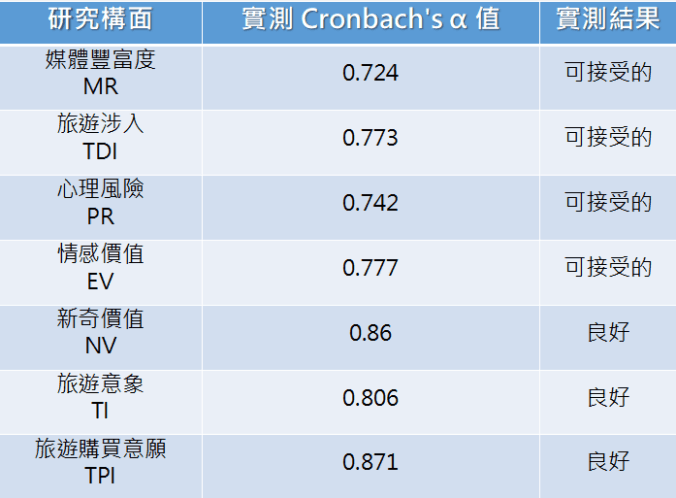
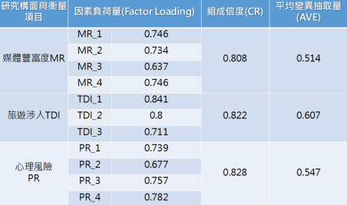
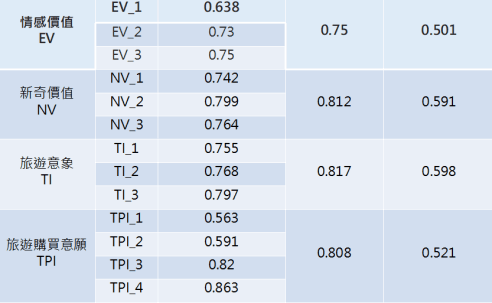

信度分析
主要用於測量研究問卷知構面是否具備一致性與穩定性，研究觀測值Cronbach's α 值 必須至少大於0.7具備高程度信度構面穩定性才進行採用。

區別效度分析
區別效度主用於檢測構面問題是否具備區別的能力，不同構面知問題不會混合在一起。並且斜線粗體平均變異出取量平方根數值必須大於下方數值才代表該構面題項具備區別能力不會與不同構面知問題混合再一起影響後續路徑分析檢測結果。

收斂效度分析
收斂效度分析主要檢測構面間問題是否可以被收斂於同一構面之中，採用因素負荷量必須大於0.5、組成信度必須大於0.7、平均變異抽取量必須大於0.5才算是具備良好收斂效度。

收斂效度分析
根據研究結果顯示，因素負荷量、組成信度與平均變異抽取量皆大於觀測建議值，因此不同構面題項間均可被收斂於同一構面之中。